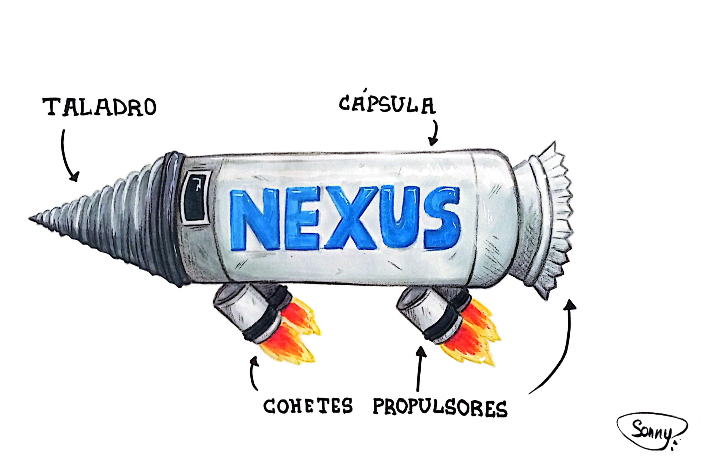

Muchas de las ilustraciones aquí presentes fueron creadas para ayudar a visualizar algunos de los elementos más importantes de la novela. Si has terminado el libro, quizá descubras detalles que habían pasado desapercibidos durante la lectura.
⚠ Aviso: esta página contiene spoilers.
Drachenauge

Texto...
La Cripta

Texto...
Tuneladoras

Texto...